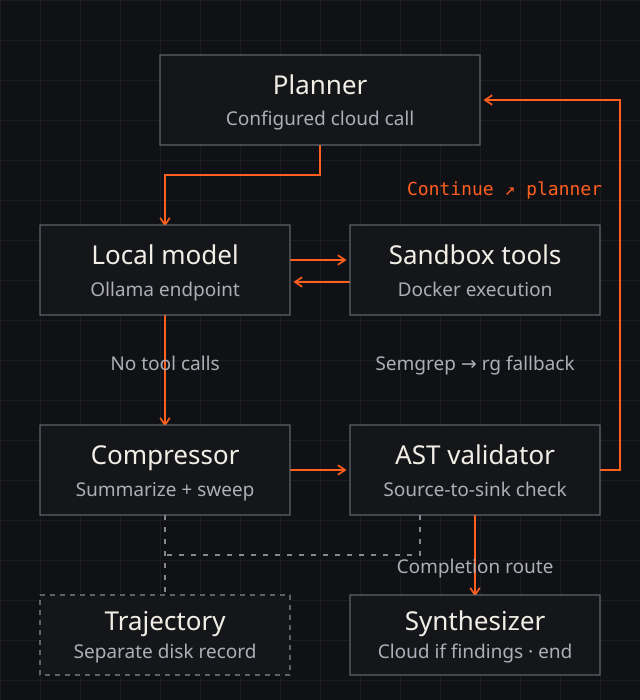

SYSTEM / 01
Experimental framework / source-backed
CipherLoop
Hybrid-model repository investigation with explicit local/cloud boundaries and an AST evidence threshold.
- Evidence
- 20 deterministic tests at revision
f03a1e1 - Limit
- Live scanner, model, Docker, and audit behavior remain untested
